关于数据可视化
1 | import numpy as np |
最简单的例子
1 | plt.plot(np.arange(10)) |
[<matplotlib.lines.Line2D at 0x120132198>]
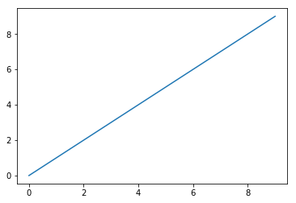
Figure和Subplot
1 | fig = plt.figure() |
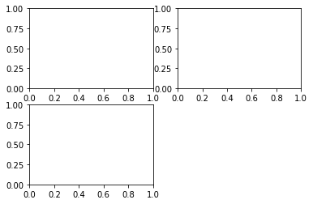
1 | plt.plot(np.random.randn(50).cumsum(),'k--') |
[<matplotlib.lines.Line2D at 0x120b7ad68>]
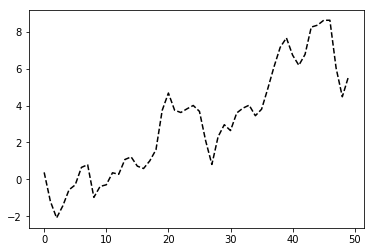
1 | _ = ax1.hist(np.random.randn(100),bins=20,color='k',alpha=0.3) |
<matplotlib.collections.PathCollection at 0x1203c5208>
1 | fig |

1 | fig, axes = plt.subplots(2, 3) |
array([[<matplotlib.axes._subplots.AxesSubplot object at 0x120a9bcc0>,
<matplotlib.axes._subplots.AxesSubplot object at 0x120f54c18>,
<matplotlib.axes._subplots.AxesSubplot object at 0x120f7b2e8>],
[<matplotlib.axes._subplots.AxesSubplot object at 0x120fa1438>,
<matplotlib.axes._subplots.AxesSubplot object at 0x120fc9b00>,
<matplotlib.axes._subplots.AxesSubplot object at 0x120ffc198>]],
dtype=object)

调整subplot周围的间距
1 | fig, axes = plt.subplots(2, 2, sharex=True, sharey=True) |
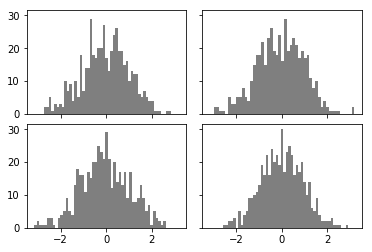
颜色、标记和类型
1 | plt.figure() |
<Figure size 432x288 with 0 Axes>
<Figure size 432x288 with 0 Axes>
1 | from numpy.random import randn |
[<matplotlib.lines.Line2D at 0x1213f3a90>]
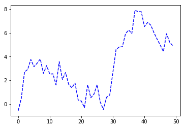
1 | plt.plot(randn(30).cumsum(), color='k', linestyle='dashed', marker='o') |
[<matplotlib.lines.Line2D at 0x1213f8fd0>]
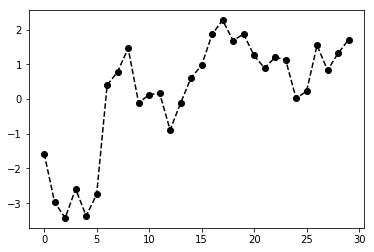
1 | plt.plot(randn(30).cumsum(),'ko--') #ko--是把参数组合在一起了.... color = 'k' marker = 'o' linestyle = '--' |
[<matplotlib.lines.Line2D at 0x1214baf60>]
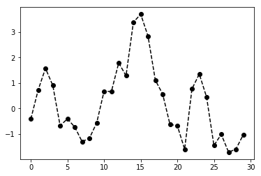
1 | plt.close('all') |
1 | data = np.random.randn(30).cumsum() |
<matplotlib.legend.Legend at 0x1216ab9e8>
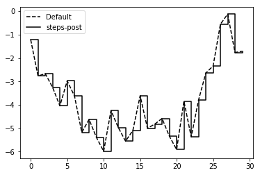
刻度、标签和图例
设置细节
1 | fig = plt.figure() |
[<matplotlib.lines.Line2D at 0x1226302b0>]
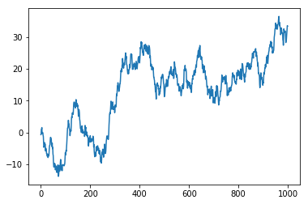
1 | ticks = ax.set_xticks([0,250,500,750,1000]) |
1 | ax.set_title('My First Title of Matplotlib') |
Text(0.5,1,'My First Title of Matplotlib')
1 | ax.set_xlabel('Stage') |
Text(0.5,3.2,'Stage')
1 | fig |
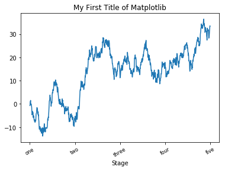
添加图例
1 | fig = plt.figure() |
[<matplotlib.lines.Line2D at 0x1223a1940>]
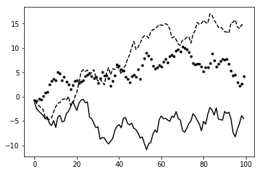
1 | ax.legend(loc='best') |
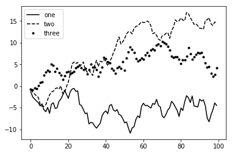
注解以及在Subplot上绘图
1 | from datetime import datetime |
Text(0.5,1,'Important dates in the 2008-2009 financial crisis')
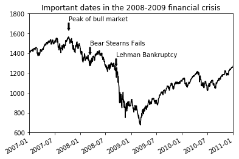
1 | fig = plt.figure() |
<matplotlib.patches.Polygon at 0x123523eb8>
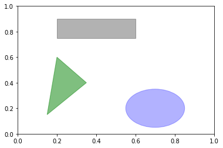
将图表保持为文件
1 | fig.savefig('/Users/zhangyangfenbi.com/Desktop/demo.png') |
写在最后
matplotlib实际上还是一个比较低级的工具，绘图都是组装起来的。书中介绍了pandas自带的绘图库，不过基于之前已经有了Seaborn，这个就不写pandas的了，后续把Seaborn的坑填上。